Shovels
From Nikkis
Las palas son una de las herramientas clave que utiliza el jugador en Prospecting! y son vitales para progresar.
Generalmente se los puede encontrar cerca de los comerciantes , junto con sus contrapartes sartenes
▲ Lista de Shovels
| Apariencia | Nombre/Descripción | Precio | Estadísticas | Ubicación |
|---|---|---|---|---|
| 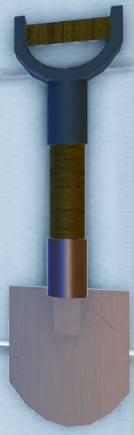 | Rusty Shovel Una pala oxidada a punto de romperse. Funciona bien... por ahora. |
Gratis |
Fuerza de excavación: 1 Velocidad de excavación: 0.8 Dureza: 1 |
Se entrega al jugador al unirse. |
| 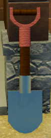 | Iron Shovel Una pala de hierro resistente. |
$3,000 |
Fuerza de excavación: 2 Velocidad de excavación: 0.8 Dureza: 1 |
Rubble Creek |
| 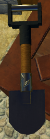 | Steel Shovel Una pala resistente de acero. Puede excavar en depósitos más duros. |
$25,000 |
Fuerza de excavación: 3 Velocidad de excavación: 0.8 Dureza: 2 |
Rubble Creek |
| 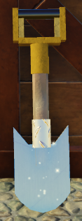 | Silver Shovel Una pala ligera de plata. ¿Cómo puede la plata ser tan resistente? |
$75,000 |
Fuerza de excavación: 4 Velocidad de excavación: 1.1 Dureza: 2 |
Rubble Creek |
| 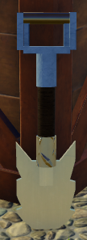 | Reinforced Shovel Una pala de titanio confiable diseñada para condiciones difíciles. |
$135,000 |
Fuerza de excavación: 5 Velocidad de excavación: 0.9 Dureza: 3 |
Rubble Creek |
| 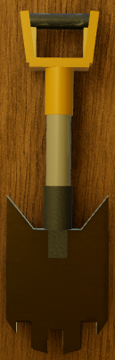 | The Excavator Una pala poderosa que puede romper piedras. |
$320,000 |
Fuerza de excavación: 7 Velocidad de agitación: 0.7 Dureza: 3 |
Fortune River |
| 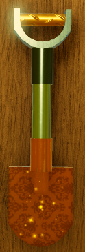 | Golden Shovel Una preciosa pala hecha de una rara aleación de oro. |
$1,333,000 |
Fuerza de excavación: 8 Velociad de agitación: 1 Dureza: 3 |
Fortune River |
| 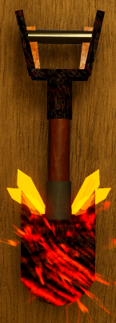 | Meteoric Shovel Una pala forjada con hierro meteórico. Sostenerla te llena de energía. |
$4,000,000 |
Fuerza de excavación: 7 Velocidad de excavación: 1.5 Dureza: 4 |
Fortune River |
| 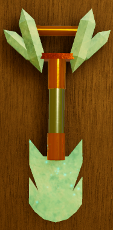 | Diamond Shovel ¡Una pala hecha de diamante, el material más duro! |
$12,500,000 |
Fuerza de excavación: 12 Velocidad de excavación: 1 Dureza: 4 |
Fortune River |
| 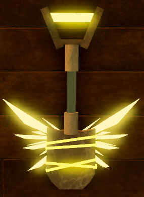 | Divine Shovel Una pala divina bendecida con la fuerza de romper casi cualquier cosa. |
$40,000,000 |
Fuerza de excavación: 16 Velocidad de agitación: 1.1 Dureza: 5 |
Crystal Cavern River |
| 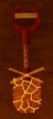 | Earthbreaker Una reliquia de una antigua civilización. A pesar de su antigüedad, aún alberga un poder increíble. |
$125,000,000 |
Fuerza de excavación: 25 Velocidad de excavación: 1 Dureza: 5 |
Waterfall Temple |
| 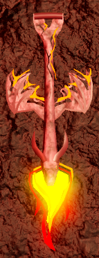 | Dragonflame Shovel Una pala llameante que quema todos los depósitos. |
$400,000,000 |
Fuerza de excavación: 50 Velocidad de excavación: 0.6 Dureza: 5 |
The Magma Furnace |
| 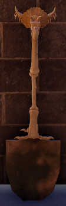 | Fossilized Shovel Una antigua pala de hueso que se ha fosilizado con el tiempo. |
$1 Billón |
Fuerza de excavación: 40 Velocidad de excavación: 1 Dureza: 6 |
Ancient Ruins |
| 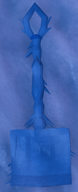 | Icebreaker
Una pala congelada que puede aplastar depósitos congelados. |
$10 Billones |
Fuerza de excavación: 60 Velocidad de excavación: 1.1 Dureza: 6 |
Frozen Peak |
▲ Pans por tiempo limitado
| Apariencia | Nombre/Descripción | Precio | Estadísticas | Ubicación |
|---|---|---|---|---|
| 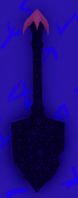 | Galactic Shovel Una pala formada a partir de las estrellas. Tiene la posibilidad de otorgar "Voidtorn" a los objetos encontrados. |
$2 Billones |
Fuerza de excavación: 60 Velocidad de excavación: 0.8 Dureza: 6 |
The Void |